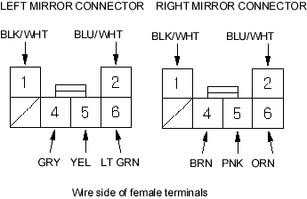

- Insert the terminal into the connector as shown below:

- Seal the intersection of wire harness with tape.
- Reassemble in the reverse order of disassembly. Be careful not to break the mirror when reinstalling into the actuator.
- Reinstall the mirror assembly onto the door.
- Operate the power mirror to ensure smooth operation.